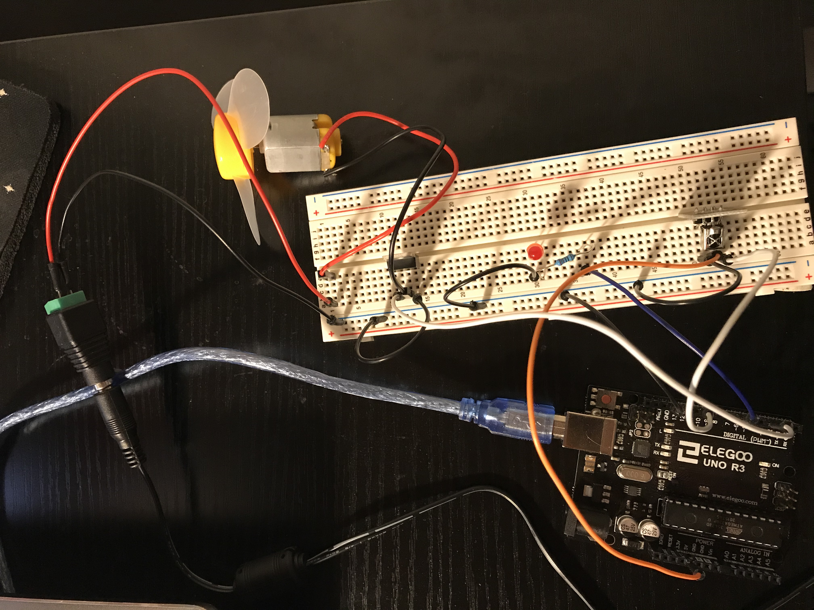

Nigel's Assignment 5!

Here is all the documentation for assignment 4!


Here is all the documentation for assignment 4!
This is the schematic that shows how I planned out my circuit. My calculations for how I chose my resistor is shown in this image as well.
This is my circuit that shows how I configured my breadboard and wires. The image shows how the IR receiver and LED is connected on the breadboard. The blue wire corresponds to the LED, the black wires go to ground, the white wires connect to Pin 11, and the yellow wire is connected to 5V of power.